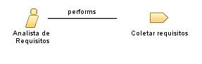

| Role: Analista de Requisitos |
| |
 |
| Profissional responsável pela coleta, análise e documentação dos requisitos do projeto. |
|
Relationships
 |
| Primary Performs |
|
| Modifies |
|
| Process Usage |
|
Main Description
| O analista de requisitos atua como ponte entre os stakeholders e a equipe técnica. Ele coleta as necessidades e
expectativas do cliente, traduzindo-as em requisitos claros e detalhados que orientam o desenvolvimento do sistema. Seu
trabalho envolve realizar entrevistas, reuniões, e elaborar documentos que descrevem o comportamento e funcionalidades do
software. |
Staffing
| Skills | Habilidades de comunicação e entrevistas, Conhecimento de técnicas de elicitação de requisitos, Documentação de requisitos
(user stories, casos de uso), Familiaridade com metodologias ágeis e tradicionais, Análise de processos de negócio,
Negociação e mediação de conflitos |
|